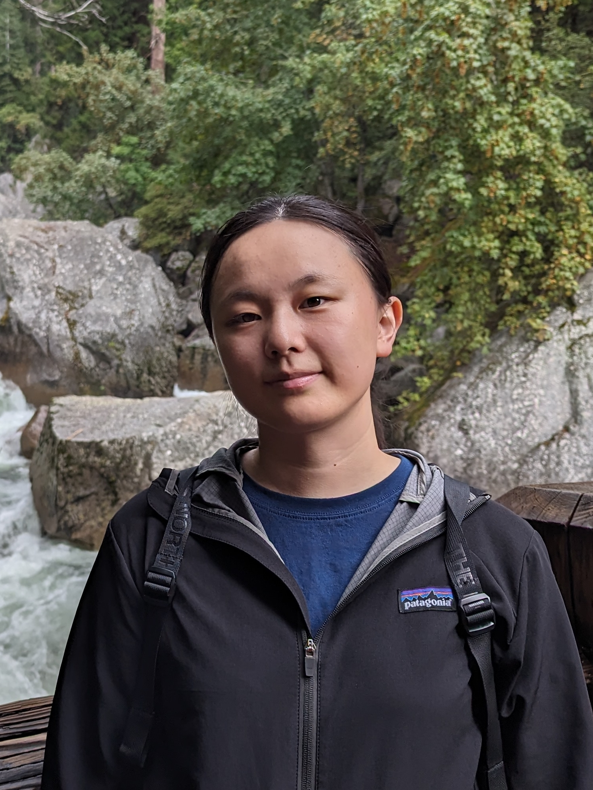

Student Researcher, ByteDance (Seed-Infra-Inference, Mentor: Zherui Liu. In collaboration with the High Speed Network team)
I'm a last-year Ph.D. student at PADSYS Lab, University of California,
Merced
Advisor: Dr. Xiaoyi Lu
M.S. in HPC with Data Science, University of Edinburgh (EPCC)
B.E. in Software Engineering, Sun Yat-sen University
I'm interested in HPC Communication (e.g., MPI, NCCL), RDMA, and DPU.
Email: yli304[at]ucmerced.edu
